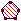

Le reclassement d'objets
La reclasificación de objetos.
En algunos casos es necesario modificar el orden en el cual fueron creados los objetos de una figura.
Tomemos un ejemplo:
Crearon dos puntos libres O y A en negro luego crearon la circunferencia de centro O y que pasa por A.
Activaron a continuación el color rojo, elegido el estilo de relleno pleno, luego cliquear sobre el ícono  de creación de superficie delimitada por una circunferencia, polígono o lugar de puntos.
La superficie que aparece recubre entonces la porción de su recta.
Utilice entonces el menú Edición - Reclasificar al final de lista - un objeto gráfico, luego cliquear sobre la recta.
La porción ocultada reaparece.
Oprimir la tecla F5 (antecedentes).
Verán que la recta es ahora el último objeto en la lista de los objetos creados.
Es así posible reclasificar:
Un objeto gráfico hacia el principio o hacia el final de la lista de los objetos creados.
Un objeto numérico hacia el principio o hacia el final de la lista de los objetos creados.
Un macro hacia el principio o hacia el final de la lista de los objetos creados.
Un macro puede reclasificarse o cliqueando sobre su título o mediante el menú Macro - Modificación o reclasificación de una macro.
Copyright © <2009>, <Yves Biton>
Created with the Freeware Edition of HelpNDoc: Free help authoring environment